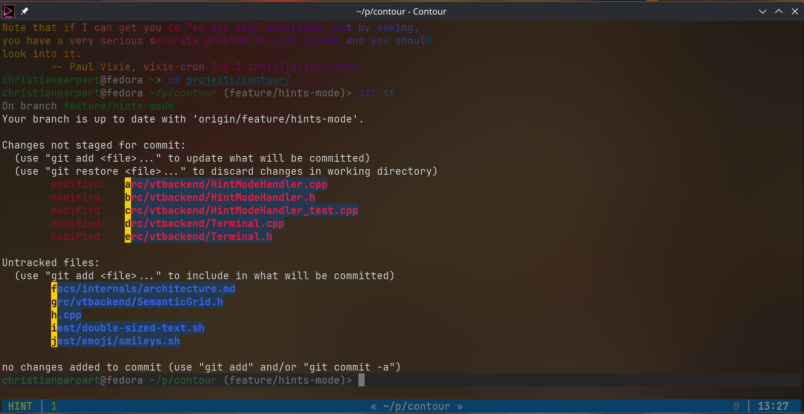
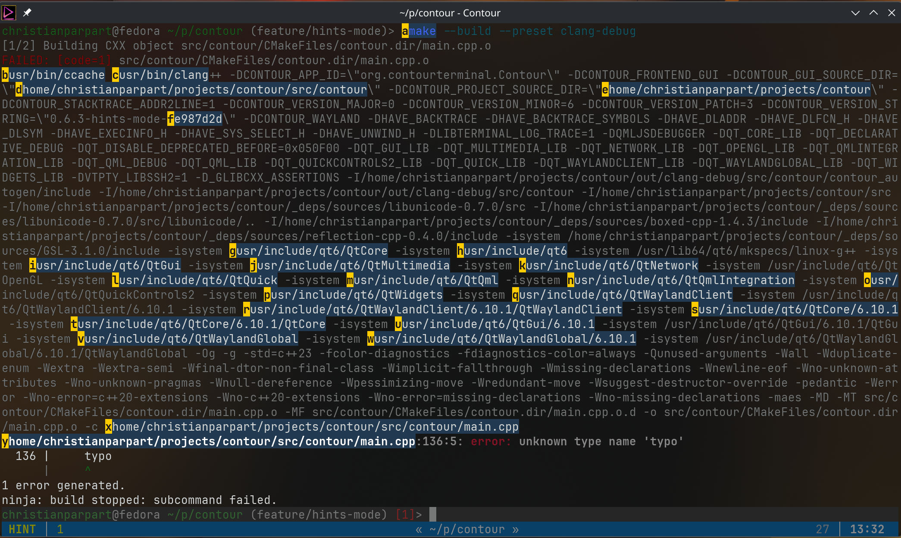

Hint Mode#
Hint mode lets you quickly act on clickable elements visible in the terminal — URLs, file paths, git commit hashes, IP addresses — using only the keyboard. When activated, Contour scans the visible screen for recognized patterns, overlays a short alphabetic label on each match, and waits for you to type a label to perform an action on that match.
Think of it like Vimium for your terminal.

Activating Hint Mode#
There are two ways to enter hint mode:
Via Key Binding (from any mode)#
The default key binding activates hint mode for URLs:
input_mapping:
- { mods: [Control, Shift], key: U, action: HintMode, patterns: url, hint_action: Open }
Press Ctrl+Shift+U to scan for URLs and open the selected one in your browser.
Via Vi Normal Mode#
When in normal mode, you can use:
gh— activate hint mode with Copy action (yank the match to clipboard)gH— activate hint mode with Open action (open the match, e.g. URL in browser)
These commands scan with the profile's patterns: the builtins (URLs, file paths,
git hashes, IPs) and your own hint_patterns.
Using Hint Mode#
Once hint mode is active:
- Labels appear — Each detected match gets a short label (
a,b, ...,z; or two-character labelsaa,ab, ... for more than 26 matches). - Type the label — Type the label characters to select a match. Labels are case-insensitive.
- Auto-select — As soon as your typed characters uniquely identify a match, the action is performed automatically.
- Cancel — Press Escape to exit hint mode without selecting anything.
- Backspace — Press Backspace to undo the last typed label character.
Recognized Patterns#
Contour ships with the following builtin pattern detectors:
| Pattern | Examples | Description |
|---|---|---|
url |
https://example.com, http://localhost:8080 |
http, https, ftp, file and mailto URLs |
filepath |
/home/user/file.txt, ./src/main.cpp, src/main.cpp:12:5, C:\Users\me\notes.txt, Makefile |
Absolute, relative, home-relative (~/...) and Windows paths, and bare file names; a :line[:column] or (line[,column]) after one is kept as its location |
githash |
a1b2c3d, abc1234567890def1234567890abcdef12345678 |
7–40 character hex strings (git commit SHAs) |
ipv4 |
192.168.1.1, 10.0.0.1:8080 |
IPv4 addresses, optionally with port |
ipv6 |
::1, fe80::1, 2001:0db8:85a3:0000:0000:8a2e:0370:7334 |
IPv6 addresses |
Smart File Path Detection#
Hint mode and the links Contour underlines in output share one path grammar,
which takes bare names and a location printed after a path (main.cpp:42:10).
When the terminal knows the current working directory, or the directory a command
ran in (via shell integration),
file path detection also matches:
- Bare filenames with extensions —
main.cpp,README.md - Extensionless files —
Makefile,LICENSE,Dockerfile,CHANGELOG - Directory names —
src,build,docs
These bare names are validated against the filesystem: only entries that actually
exist in that directory are shown as hints. This means you can
look at ls output, compiler errors, or git status and jump directly to the
referenced files.

Actions#
The hint_action parameter controls what happens when you select a match:
| Action | Description |
|---|---|
Copy |
Copy the matched text to the system clipboard (default); a path, resolved to its absolute form |
Open |
Open the match as Ctrl+click opens it — web URLs in the browser, directories in the file manager, and files (a file:// URL among them) with file_opener at the line they were printed with |
Paste |
Paste the matched text into the terminal input |
CopyAndPaste |
Copy to clipboard and paste into the terminal |
Select |
Enter vi visual mode with the match range pre-selected for manual adjustment |
Configuration#
Key Bindings#
You can create multiple hint mode bindings for different pattern sets and actions:
input_mapping:
# Open URLs in browser
- { mods: [Control, Shift], key: U, action: HintMode, patterns: url, hint_action: Open }
# Copy file paths to clipboard
- { mods: [Control, Shift], key: F, action: HintMode, patterns: filepath, hint_action: Copy }
# Copy git hashes to clipboard
- { mods: [Control, Shift], key: G, action: HintMode, patterns: githash, hint_action: Copy }
# Scan for all patterns and copy
- { mods: [Control, Shift], key: H, action: HintMode, patterns: all, hint_action: Copy }
The patterns parameter accepts:
- A single pattern name:
url,filepath,githash,ipv4,ipv6 - Multiple pattern names separated by
|:filepath|githash allor empty: scan for all builtin patterns at once
Scope: Reaching Into Scrollback#
By default hint mode scans only what is on screen. The scope parameter widens
that to the scrollback history:
input_mapping:
# Scan the visible page (the default — may be omitted)
- { mods: [Control, Shift], key: U, action: HintMode, patterns: url, hint_action: Open, scope: Visible }
# Scan the visible page *and* scrollback history
- { mods: [Control, Shift], key: Y, action: HintMode, patterns: url, hint_action: Open, scope: Scrollback }
Under scope: Scrollback, labels are assigned once when hint mode is activated and
then stay put: scrolling reveals the labels on other rows rather than renaming
the ones you have already read. So the workflow is: activate, scroll to the output
you want, then type its label. A label acts on its match even while it is off screen.
scope: Visible behaves the other way round, because its scan region is the
viewport: scrolling re-scans and re-labels.
How much history a Scrollback activation reads is capped per profile, so a very
large scrollback does not turn one keystroke into a long scan:
profiles:
main:
# Maximum scrollback rows a `scope: Scrollback` activation scans (default: 1000).
hint_scrollback_lines: 1000
Wrapped Lines#
A pattern is matched against the logical line, so a URL that the terminal broke across two or more rows because the window was too narrow is still found as a single hint, and selecting it yields the whole URL rather than the fragment on one row. The label sits at the start of the match, and the highlight follows the match across the line break.
A hint is only offered where its label can be drawn. A match that begins above the scanned region — so that its label would be invisible — is not offered, since a label you cannot see is a label you cannot type. A match that begins inside the region and runs past its end is offered, and still yields its complete text.
Colors#
Hint mode label and match colors are configured in the color scheme section of your configuration:
color_schemes:
default:
# Colors for the short alphabetic labels overlaid on matches.
hint_label:
foreground: '#000000'
foreground_alpha: 1.0
background: '#E5C07B'
background_alpha: 1.0
# Colors for the matched text behind the labels.
hint_match:
foreground: '#ABB2BF'
foreground_alpha: 1.0
background: '#3E4452'
background_alpha: 0.8
Custom Patterns#
You can define your own hint patterns in the profile configuration. Each pattern
needs a name (used to reference it in key bindings) and a regex
(ECMAScript syntax):
profiles:
main:
hint_patterns:
- name: uuid
regex: '\b[0-9a-fA-F]{8}-[0-9a-fA-F]{4}-[0-9a-fA-F]{4}-[0-9a-fA-F]{4}-[0-9a-fA-F]{12}\b'
- name: docker_id
regex: '\b[0-9a-f]{12,64}\b'
Custom patterns with the same name as a builtin override the builtin definition. You can then reference custom patterns in key bindings just like builtins:
input_mapping:
- { mods: [Control, Shift], key: I, action: HintMode, patterns: uuid, hint_action: Copy }
Back-references (\1 to \9) are not supported; a pattern using one is reported
when the configuration is loaded and disabled.
Clickable Patterns#
Links in Terminal Output describes the links Contour finds in output, and how they open, in full.
A pattern can also be found in the terminal's output without entering hint mode:
with clickable: true its matches are decorated as links are (see
hyperlink_decoration) and opened with Ctrl+click. url says what is opened,
with {0} standing for the whole match and {1} to {9} for its capture
groups. Without url, the match is opened as printed.
Where the printed text chooses the scheme (no url, or a url that does not
start with a scheme of its own, such as {0}), a match opens only with a scheme
Contour opens in URLs it finds itself: http, https, ftp, mailto or
file. Any other is no link: it is not underlined, and hint mode offers it to
copy and opens nothing. A url that writes its scheme itself may open any.
Only what a URL cannot hold is percent-encoded as a group is put in: spaces,
control characters and "#<>[\]^`{|}. Characters such as / ? & = + @ : %
pass through, so a group placed in a query can add parameters, and one placed
before the host can change it. Write the scheme and the host in the template
itself, as the examples below do, and put groups after them.
profiles:
main:
hint_patterns:
- name: jira
regex: '\b[A-Z][A-Z0-9]+-\d+\b'
clickable: true
url: 'https://jira.example.com/browse/{0}'
- name: github_issue
regex: '\b([\w.-]+)/([\w.-]+)#(\d+)\b'
clickable: true
url: 'https://github.com/{1}/{2}/issues/{3}'
- name: commit
regex: '\b[0-9a-f]{7,40}\b'
clickable: true
url: 'https://github.com/contour-terminal/contour/commit/{0}'
The builtins url and filepath are clickable, and githash, ipv4 and ipv6
are offered in hint mode only. An entry named like a builtin changes only the keys
it gives, so it may leave out its regex:
hint_patterns:
- name: filepath
clickable: false # stop underlining paths; hint mode still offers them
A url template applies to your own patterns only: a builtin opens what it finds,
and a url given to one is reported and ignored. So clickable: true on
githash, ipv4 or ipv6 alone makes no link, as a bare hash or address names
no scheme; to link commits to their page, write a pattern of your own with a
url, as commit above does.
A url that names a capture group the regex does not have, such as {2} for a
regex with one group, is reported when the configuration is loaded and disables
the pattern.
A regex that overrides filepath must say which part of its match is the path:
capture group 1 is the path, groups 2 and 3 a :line[:column] printed after it,
and groups 4 and 5 a (line[,column]). An override of filepath without a
capture group is reported and disabled. Every other pattern's link is its whole
match, {0}.
Path Resolution#
When copying or opening file paths, Contour resolves relative paths to absolute
using the directory the command that printed them ran in, as shell integration
recorded it, so a cd since then does not change what an earlier command's output
names. Outside any command's output, the terminal's current working directory is
used. For example, copying a hint for src/main.cpp gives you
/home/user/project/src/main.cpp in the clipboard, and opening it passes the full
path to your editor or file manager. Ctrl+clicking a path resolves it the same way.
A command that changes directory itself, such as cd build && make, prints paths
relative to where it went. The shell reports that directory only at the next
prompt, so a path not found where the command started is looked up there too.
Paths printed by a command that ran on another machine (over ssh, in a container)
name files there, so they are neither offered as hints nor opened here. That
includes the output of an ssh session whose remote shell reports its directory
but marks no commands of its own: everything it printed belongs to the local ssh
command, and stays refused after you return to the local prompt.
Home-relative paths (~/...) are expanded using the HOME environment variable.
Tips and Tricks#
-
Shell integration matters — Ensure your shell reports the current working directory via OSC 133 for the best file path detection. Without it, only paths containing a
/separator are matched. -
Combine with Vi mode — In normal mode,
gh(copy) andgH(open) are quick ways to enter hint mode without reaching for modifier keys. -
Works with scrollback — Hint mode scans the currently visible viewport. Scroll to the area of interest first, then activate hint mode.
-
Compiler errors — When viewing build output with file paths like
src/main.cpp:42:10: error: ..., hint mode detects the file path portion, making it easy to copy or open the referenced file.
Related#
- Input Modes — Vi-like input modes including normal mode, where
gh/gHtrigger hint mode - Key Mapping — How to customize key bindings
- Shell Integration — Enables smart bare filename detection